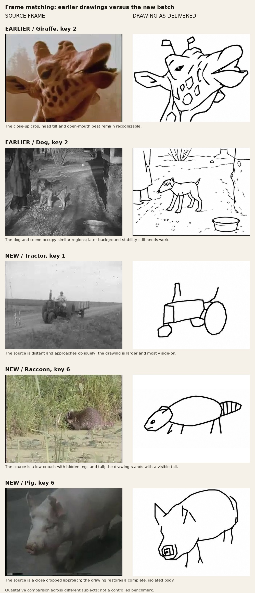

The new batch regressed from frame-specific drawings toward isolated model-sheet poses. It used source references, but it did not establish matching screen position, scale, camera angle, crop, visible silhouette, occlusion or contacts.
The earlier giraffe follows the close-up crop and mouth beat. The new tractor remains too broadside and large; the raccoon stands where the source crouches in water; the pig restores a complete body where the source crops it.
Eight earlier still-review passes assessed identity and broad action. They do not establish frame matching. Original critic files remain unchanged; this is a separate supervisor reassessment.

This qualitative comparison uses different subjects and is not a controlled benchmark. Numeric registration and motion tests have not run for these drawings. Audit record.